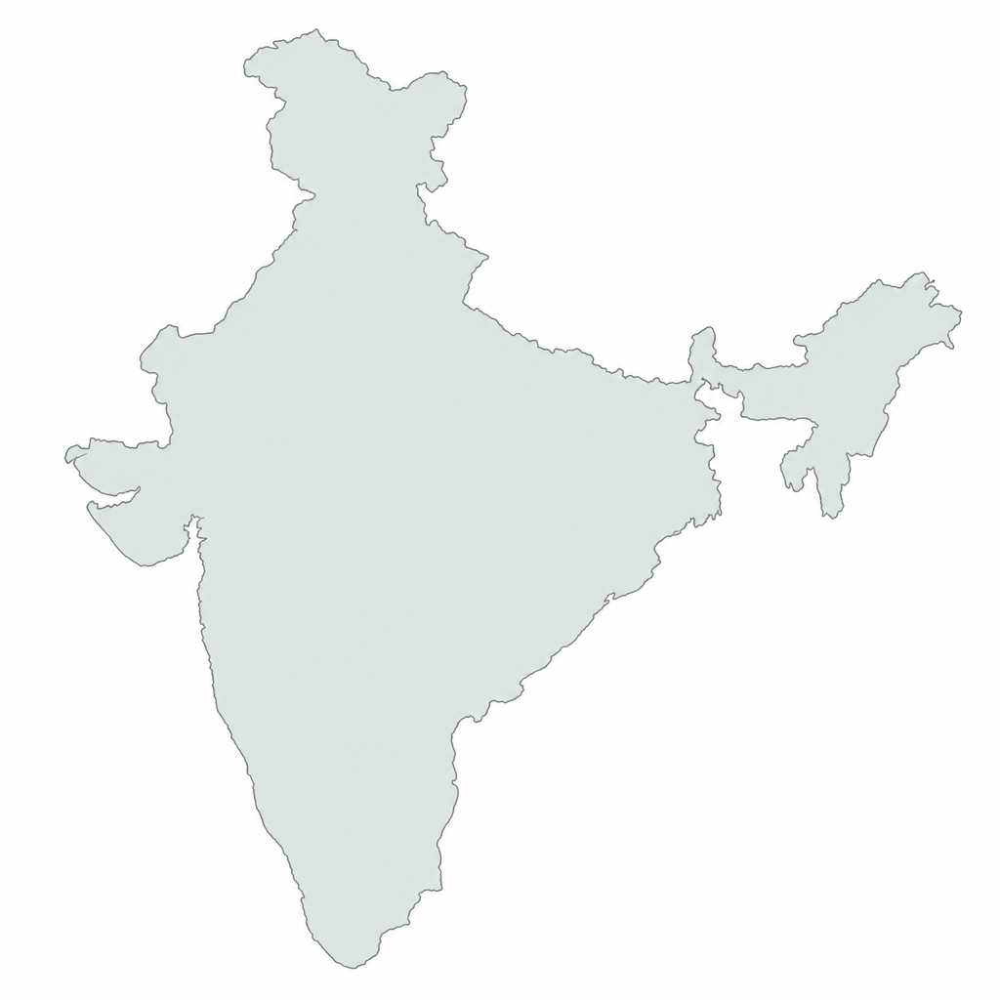

Loading Kishan - Tech…
Kishan · Tech is a friendly guide to the crops grown across India in every season. Here you can explore Summer, Winter and Rain (monsoon) crops, see where they grow on an India map, learn how agriculture shapes our festivals, and discover rich details — images, descriptions, rainfall needs and growing regions — for 150 crops. Scroll down to choose where you would like to begin.
| Crop / फसल | Mandi / मंडी Location | Min Price (₹/Qtl) | Max Price (₹/Qtl) | Modal Price (औसत भाव) |
|---|
Select your farm conditions below to discover the most suitable crops to cultivate.
Crops you bookmarked for quick reference appear here.
See which regions of India grow more of each season's crops. Tap a season below to highlight its growing zones on the map.

Agriculture is not just the backbone of India's economy — it is woven into the culture, festivals and daily life of every Indian.
Agriculture is the largest source of livelihood in India, supporting over 50% of the population. It contributes around 17–18% to India's GDP and feeds a nation of 1.4 billion people. India ranks among the world's top producers of rice, wheat, sugarcane, cotton, pulses and many fruits and vegetables. From the paddy fields of West Bengal to the wheat plains of Punjab, from the spice gardens of Kerala to the cotton belt of Gujarat — farming shapes the land, the economy and the soul of the country.
India follows a dual-cropping rhythm rooted in the monsoon. Kharif crops (rice, maize, cotton, soybean) are sown with the southwest monsoon in June–October. Rabi crops (wheat, mustard, chickpea) are sown in the cool winter of October–March and harvested in spring. Zaid or summer crops (watermelon, cucumber, okra, mango) fill the hot gap between the two main seasons. This three-season cycle keeps Indian farmland productive nearly year-round.
Agriculture is the foundation of rural India, providing employment and food security to crores of families. It supplies raw materials to industries like textiles, sugar and edible oils. India is the world's largest producer of pulses, the largest producer of milk, and the second-largest producer of rice and wheat. Farming preserves traditional knowledge, protects biodiversity through thousands of crop varieties, and keeps alive the deep bond between the Indian farmer and the land.
Across India, every harvest is celebrated with joy, gratitude and colour. These festivals honour the farmer, the soil and the seasons — and they are among the most beloved festivals in the country.
Every Indian season brings its own harvest. Tap a card to see the crops grown in that season.
Description
Description…
Share your farming experience, tips, or questions about this crop.